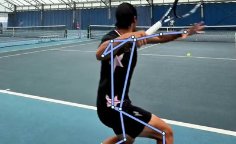
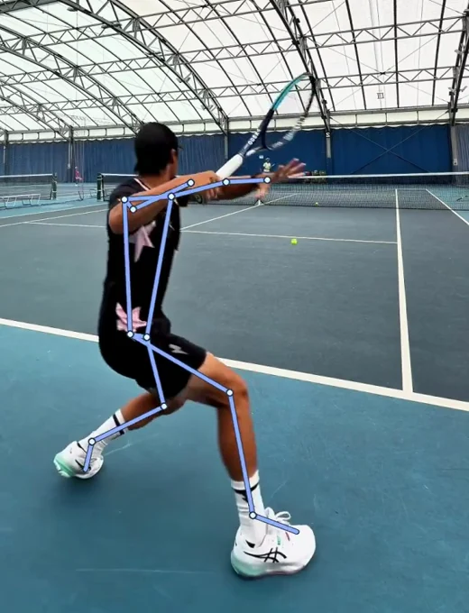
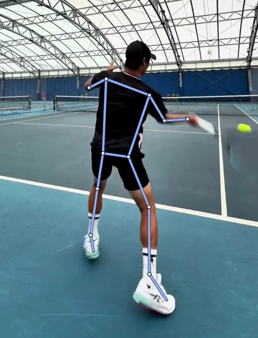
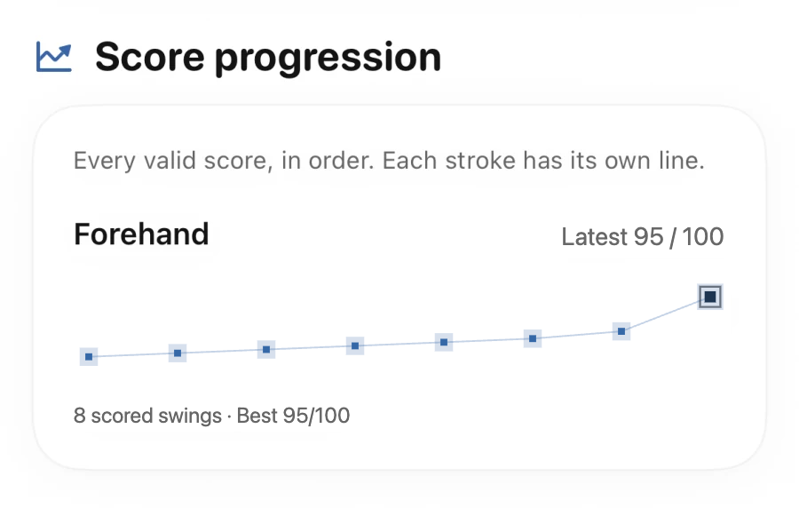
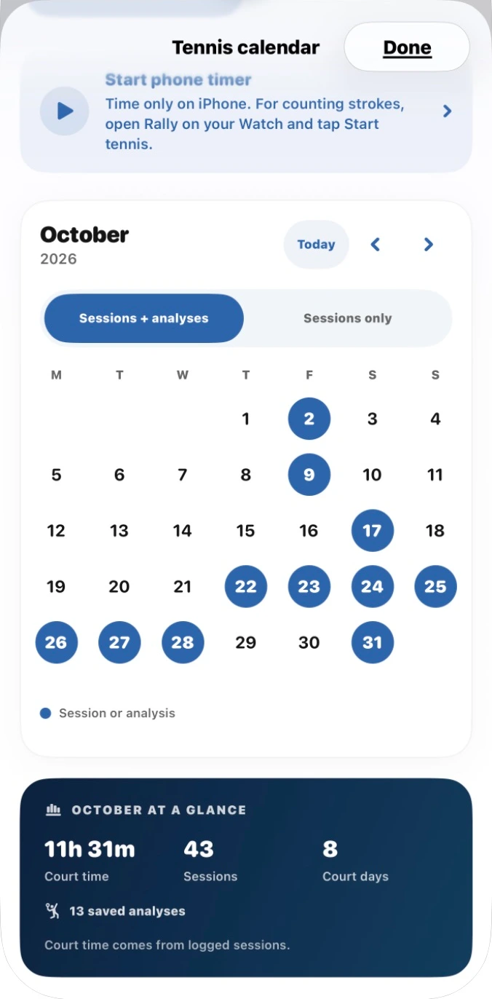
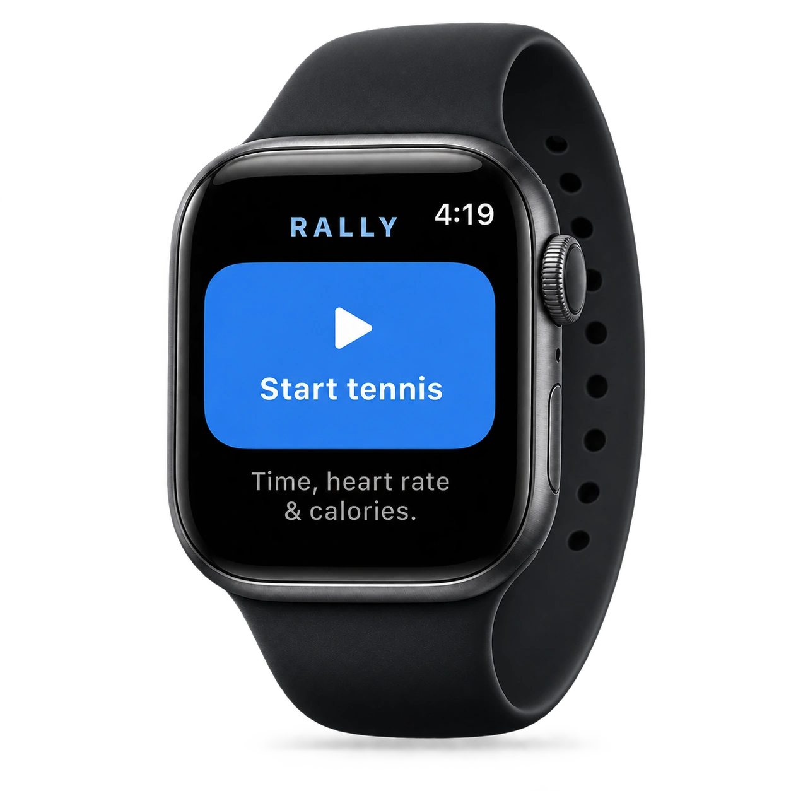

Computer vision for tennis
See what
you felt.
Film a swing on your iPhone. Rally tracks how you load, turn and move through contact, then gives you one coaching cue for your next session.

Indoor rallyPlay the motion overlay- Forehand
- Backhand
- Serve
Inside the analysis
Anatomy of a forehand.
Start with a video. Watch this forehand unfold, find one detail to practice, and see how Rally tracks your scores over time.
Follow the turn.
Rally’s pose tracking estimates joint positions frame by frame. Watch the near player bend his knees, then follow the turn of his hips and shoulders through the forehand.
Watch Rally on InstagramRally AI Advanced Coaching
“You’ve got a smooth forehand. Stay low a beat longer as your hips turn. Meet the ball out front and let the racket follow it toward your target.”



Does the change hold?
After a few sessions with the same cue, revisit your forehand scores. Rally charts each stroke separately, so you can see how one forehand compares with the next.
Free tennis journal
Your season,
on record.
Log a lesson, an evening hit or a three-set match on iPhone. Start a tennis workout on Apple Watch to time a session from your wrist. Your calendar keeps those hours alongside your saved swing analyses.


Before you
hit record.
Have another question?
Email Rally
Can I use a video I already have?
Yes. Choose a clip from your iPhone or record a swing in Rally. The framing guide shows where to set the camera for each stroke. If Rally can’t see enough of the movement, it may decline the clip.
Which strokes can I analyze?
Rally Pro analyzes forehands, two-handed backhands and serves. Choose the stroke you want to work on before you submit the clip.
Do I need an Apple Watch?
Your iPhone is all you need for swing analysis. Rally runs on iOS 17 or later and uses an internet connection to analyze a clip. If you track court time from your wrist, the Apple Watch companion requires watchOS 10 or later.
What’s free, and what comes with Pro?
The tennis journal is free. Rally Pro adds new swing analyses, personalized coaching cues and analysis video exports. You keep access to your journal and saved results after Pro expires. Monthly and annual plans renew automatically unless canceled. The app shows your price, trial eligibility and billing terms before purchase.
Where does my swing video go?
For swing analysis, Rally removes the audio on your iPhone before uploading the clip for processing. Your saved swing history stays on your iPhone. Standalone local video modes handle footage differently. The Privacy Policy explains how Rally processes, retains and deletes data.
Who is Rally for?
Rally is for players 18 and older who want something specific to work on between lessons or hitting sessions. Use the feedback alongside in-person coaching. Analysis can be imperfect, and Rally flags or declines clips when tracking confidence or video quality is too low.
Take one cue to court.
Start your free tennis journal on iPhone. Add Rally Pro when you’re ready to analyze a swing.